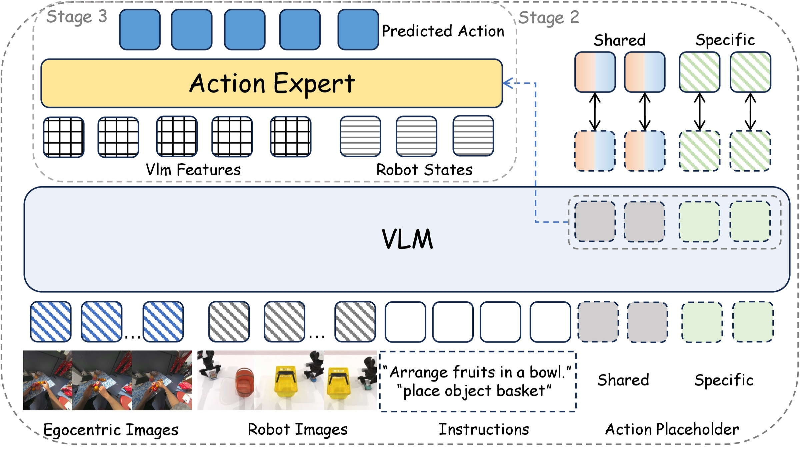
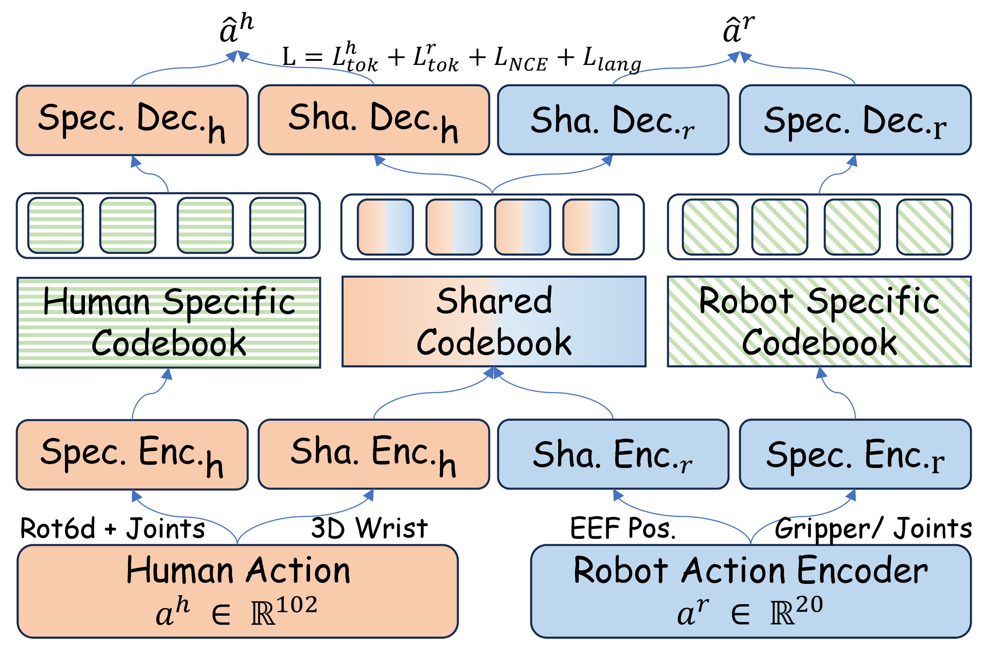
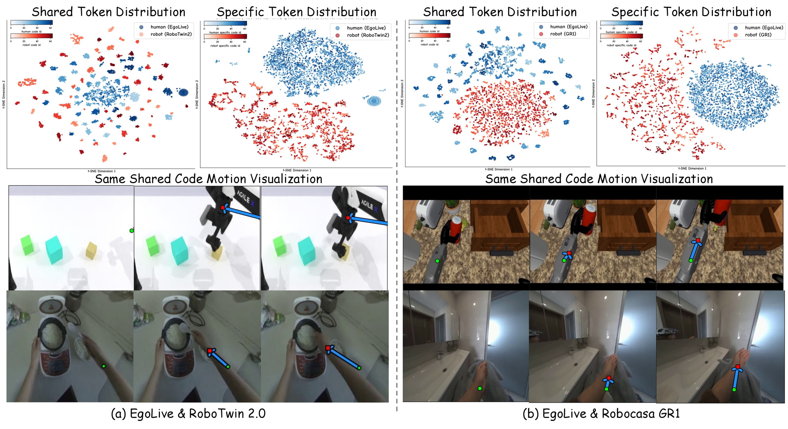
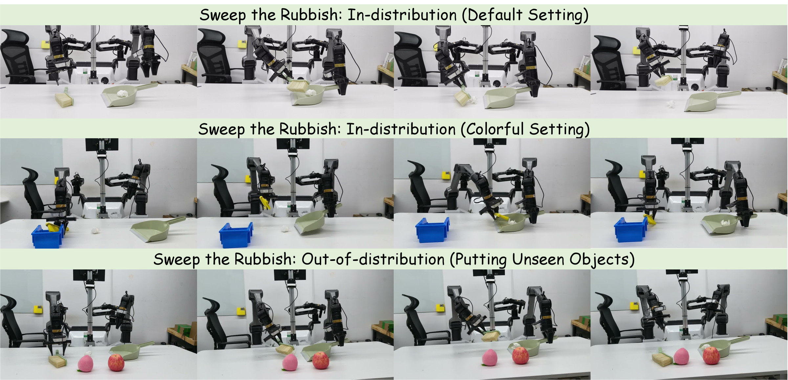

Separating what transfers from what does not, so that a robot can inherit manipulation semantics from human hands without inheriting human kinematics.
Paper under double-blind review

Click any figure to open the full-resolution version.
Vision-Language-Action (VLA) models are bottlenecked by the scarcity of robot data. Egocentric human manipulation videos offer an abundant, diverse, and semantically-rich alternative that inherently captures manipulation intent. However, the embodiment gap makes it difficult to extract action-relevant representations from these videos. From the perspective of action execution, human hands and robots share analogous manipulation primitives — reaching, grasping, placing — yet exhibit distinct kinematics tied to their embodiments. This motivates our key approach: egocentric video pretraining can yield shared action representations capturing transferable manipulation skills, while human-specific motion patterns should be disentangled to avoid interfering with robot policy learning.
To this end, we propose EXE, an Egocentric Cross(X)-Embodiment pretraining framework that learns a factorized latent action representation from egocentric human videos, separating shared manipulation priors from embodiment-specific signals. By leveraging the shared action space, the robot policy acquires generalizable manipulation semantics from diverse human demonstrations without being biased by human-specific kinematics. This shared knowledge transfers across embodiments with different kinematic structures, enabling the same pretraining to benefit both parallel grippers and dexterous hands. EXE yields consistent gains over baselines without pretraining on RoboTwin 2.0, RoboCasa GR1, and real-world manipulation tasks.
Motivation
Two strategies have been tried to bridge the human–robot action gap, and each has a structural limitation.
Forcing the entire action into a single shared codebook means the shared codes inevitably absorb embodiment-specific geometry, which obscures the transferable task semantics. Learning latent actions from raw visual frame transitions instead entangles the action signal with task-irrelevant content such as background and lighting, so the resulting latents encode visual noise rather than manipulation skill.
Certain dimensions of the action transfer better across embodiments than others. The 3D position of the wrist (human) or end-effector (robot) encodes spatial task intent — reaching, trajectory following, target approaching — and is shared regardless of kinematic structure. Finger joint configurations and gripper geometry, by contrast, are embodiment-specific and do not generalize.
Actions should be aligned not only when their spatial trajectories are similar, but also when they carry the same task semantics despite dissimilar trajectories. A human grasping a cup from above with five fingers and a robot clamping the same cup from the side with a parallel gripper both execute “grasp the cup,” yet their trajectories differ substantially — exactly the pairs a contrastive objective would wrongly push apart.
Each action is factorized into a shareable positional subspace and an embodiment-specific kinematic subspace. The former is quantized by a codebook trained jointly on human and robot data; the latter keeps a private codebook per domain.
Contrastive learning pulls together cross-domain actions with similar spatial trajectories, while frozen language embeddings supply pairwise semantic similarity as a soft target to align semantically equivalent yet spatially dissimilar actions.
Train the factorized tokenizer, co-train the VLM on human video and robot data with shared-code supervision, then fine-tune an action expert on downstream robot tasks through the shared action codes.
Method
Instead of quantizing the whole action jointly, we split it by cross-embodiment motion similarity, route the transferable part to a shared codebook, and keep the rest in per-domain codebooks.

An action vector a ∈ ℝD is partitioned into two disjoint groups by semantic role: the shared group a(s) ∈ ℝDs, i.e. the 3D wrist or end-effector position (for bimanual embodiments [pL | pR] ∈ ℝ6); and the specific group a(p) ∈ ℝDp, the remaining embodiment-dependent dimensions. The partition Ds + Dp = D is a static index map.
Each group runs through its own encoder–quantizer–decoder pipeline. The encoder combines FFT-based frequency augmentation, dilated 1D convolutions and a Transformer stack. Latents and codebook entries are ℓ2-normalized before lookup, so code assignment follows cosine similarity. Critically, unlike standard RVQ that applies all residual levels to the full action latent, our residual quantization operates within each factorized group — so the shared codebook never sees embodiment-specific dimensions.
A symmetric InfoNCE loss pulls together human and robot shared-group latents quantized to the same shared code, and pushes apart latents assigned to different codes. For anchor i, the positive set is Pi = { j : cih = cjr }. This encourages consistent code semantics across domains.
Contrastive alignment alone faces a bootstrapping problem: because code assignment is determined by spatial trajectory, human and robot actions for the same task get routed to different codes whenever their trajectories differ — so they never become contrastive positives. Language breaks this deadlock by providing an external semantic signal invariant to embodiment geometry. A frozen Qwen3-Embedding-8B encodes each sample's instruction offline, and the resulting cross-domain text similarity matrix serves as a detached soft target for the action similarity matrix:
The loss is computed only over cross-domain pairs, avoiding the degenerate within-domain case where Stext ≡ 1. Language never enters the encoder input — it acts purely as a distributional shaping signal and is discarded after tokenizer training. The full Stage 1 objective is:
Analysis
We check two things: cross-domain alignment in the shared space with clear domain separation in the specific space, and diverse, non-collapsed codebook utilization.

“Co” is the number of codes co-activated in both domains. H = human, R = RoboTwin 2.0, G = RoboCasa GR1. Codebook size is 64 for both the shared and the specific codebooks.
| Type | Domain | Activated | Co | Domain | Activated | Co |
|---|---|---|---|---|---|---|
| Shared | H & R | 59 | 58 | H & G | 64 | 64 |
| Specific | H | 64 | – | H | 64 | – |
| R | 64 | – | G | 64 | – |
Both codebooks activate nearly all codes, and almost every active code in the shared codebook is used by both the human and the robot domain — actions from different embodiments do share common motion patterns in the latent space, rather than partitioning the codebook by domain.
Experiments
EXEbase is an ablated variant using the same framework and backbone but trained directly on downstream robot data — no large-scale robot pretraining, and no Stage 1–2. The gap between EXE and EXEbase therefore isolates the benefit of our pretraining.
A bimanual benchmark on an ALOHA dual-arm robot with 50 tabletop tasks, each tested under an easy split (fixed scenes) and a hard split (randomized backgrounds, lighting, object layouts), 50 episodes per task per split.
RPT = robot-pretraining on large-scale teleoperated data.
| Model | Params | RPT | Easy | Hard | AVG |
|---|---|---|---|---|---|
| SmolVLA | 0.5B | ✗ | 59.2 | 60.8 | 60.0 |
| X-VLA | 0.8B | ✓ | 72.9 | 72.8 | 72.9 |
| TurboVLA | 0.4B | ✗ | – | – | 60.2 |
| EXEbase | 0.8B | ✗ | 68.4 | 65.2 | 66.8 |
| EXE | 0.8B | ✗ | 75.6 | 76.8 | 76.2 |
EXE reaches 76.2% average, outperforming SmolVLA, TurboVLA, and even X-VLA — despite X-VLA benefiting from large-scale teleoperated robot pretraining that EXE deliberately excludes, in order to isolate the effect of egocentric human video.
24 humanoid household tasks with articulated objects and multi-stage goals (~1,000 demonstrations per task, ~24K trajectories), presenting greater embodiment complexity than typical single-arm benchmarks.
Average success rate (%) over 24 tasks.
| Method | AVG |
|---|---|
| StarVLA-GR00T | 47.8 |
| EXEbase | 52.0 |
| EXE | 56.6 |
Ego : robot data mixing ratio, RoboTwin success rate (%).
| Ego : Robot | Easy | Hard | AVG |
|---|---|---|---|
| 1 : 1 | 75.6 | 76.8 | 76.2 |
| 2 : 1 | 75.5 | 73.2 | 74.3 |
| 3 : 1 | 76.0 | 75.0 | 75.5 |
The shared spatial-intent vocabulary learned from human video benefits not only gripper-based manipulation but also dexterous-hand tasks. On the mixing ratio, a balanced 1:1 works best: over-weighting robot data biases the backbone toward the robot domain and erodes the transferable shared representation.
Stage 1 alignment losses and the Stage 3 Bridge Feature each contribute independently.
| InfoNCE | Language align | Bridge Feature | Easy | Hard | AVG |
|---|---|---|---|---|---|
| ✗ | ✗ | ✗ | 74.1 | 72.3 | 73.2 |
| ✓ | ✗ | ✗ | 74.6 | 73.0 | 73.8 |
| ✓ | ✓ | ✗ | 75.2 | 73.0 | 74.1 |
| ✓ | ✓ | ✓ | 75.6 | 76.8 | 76.2 |
Adding shared-code InfoNCE stabilizes the shared codebook. Language-guided relational distillation helps further, precisely because the frozen language embedding is embodiment-invariant and can guide semantically equivalent actions onto nearby codes even when their trajectories differ — the regime where purely spatial InfoNCE has no positive pairs. Finally, the Bridge Feature confirms that the shared action-token features from Stage 2 transfer effectively into Stage 3 policy learning.
Robot domain fixed to RoboTwin 2.0; the egocentric source is varied.
| Human dataset | Robot dataset | Easy | Hard | AVG |
|---|---|---|---|---|
| VITRA-1M | RoboTwin 2.0 | 75.2 | 75.2 | 75.2 |
| EgoDex | RoboTwin 2.0 | 75.2 | 76.4 | 75.8 |
| EgoLive | RoboTwin 2.0 | 75.6 | 76.8 | 76.2 |
All three egocentric sources improve over EXEbase, so EXE is not tied to one specific dataset. EgoLive performs best, likely because its naturalistic hand-manipulation scenarios provide richer spatial-intent coverage that aligns well with bimanual tabletop manipulation.
Real robot
An AgileX Piper bimanual platform, task “sweep the rubbish,” 2,450 teleoperated demonstrations, 10 rollouts per evaluation group.

10 rollouts per group on the physical platform.
| Setting | EXEbase | EXE | Δ |
|---|---|---|---|
| In-distribution | 60 | 80 | +20 |
| Putting unseen objects | 10 | 30 | +20 |
The in-distribution gain is most pronounced on visually colorful objects — e.g. a broom-and-dustpan set with distinctly colored parts — suggesting that egocentric pretraining helps the policy exploit rich color cues for more accurate manipulation. Under unseen-object distractors, the three-fold relative improvement indicates stronger scene-level generalization.
Implementation
50k steps. Shared codebook size 64, per-domain specific codebook size 64, quantization dimension 32.
30k iterations of cross-entropy on shared action tokens, built on X-VLA with a Florence-2-large backbone. Large-scale cross-embodiment robot data is deliberately excluded.
Randomly initialized and post-trained on robot data for 60k iterations, inheriting the Stage 2 representations.
Batch size 32, learning rate 6e−4, 20k warmup steps, behavior cloning with an ℓ1 loss, on 8× NVIDIA A800 GPUs.
@inproceedings{exe2026,
title = {EXE: Egocentric Cross-Embodiment Pretraining via
Factorized Latent Actions for VLA Models},
author = {Anonymous Authors},
booktitle = {Under review},
year = {2026}
}